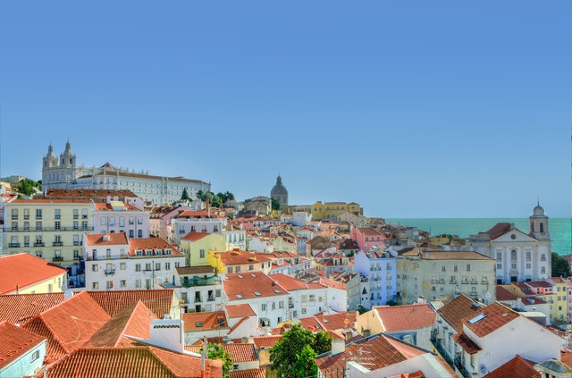
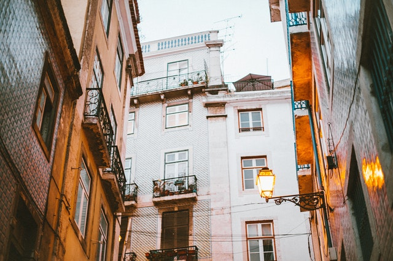
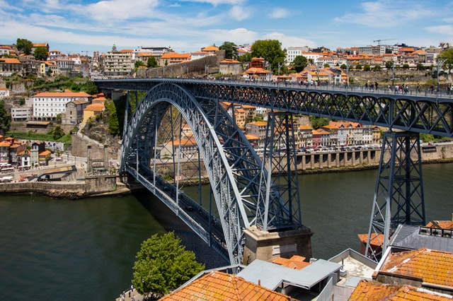
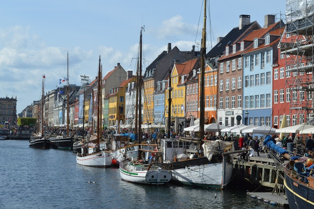

Lugares Incriveis Para Conhecer em Portugal
Lisboa

Lisboa GCTEComTE é a capital de Portugal e a cidade mais populosa do país com uma população de 506 892 habitantes, dentro dos seus limites administrativos. Na Área Metropolitana de Lisboa, residem 2 821 697 pessoas, sendo por isso a maior e mais populosa área metropolitana do país. Lisboa é o centro político de Portugal, sede do Governo e da residência do chefe de Estado. É o "farol da lusofonia": a Comunidade dos Países de Língua Portuguesa tem a sua sede na cidade. É ainda a capital mais a ocidente do continente europeu na costa atlântica. É também a sede do município de Lisboa com uma população de 508.368 habitantes residentes em 24 freguesias. O estatuto administrativo da cidade foi originalmente concedido pelo ditador Júlio César enquanto município romano. by:wikipedia
Setubal

O topónimo 'Setúbal' deriva do termo romanizado 'Cetóbriga' (Ceto + designação celta briga para povoação).Segundo alguns autores (como José Hermano Saraiva), a exemplo de outras cidades ibéricas e do sul da Europa, o topónimo 'Setúbal' pode estar relacionado com o hidrónimo do rio (Sado ou Sadão) que banha a povoação, referido pelo geógrafo árabe Dreses como Xetubre. E, neste caso de o topónimo Setúbal estar relacionado com o hidrónimo, a sua origem pode estar na palavra Ketovion, como sugere Montexano.Flávio Josefo, na História dos Hebreus, relaciona-o a um dos povos iberos.Uma outra tese, fantasiosa, diz que o nome da cidade resultou da cisão de dois nomes bíblicos: Sete (3º filho de Adão) e Tubal (neto de Noé). Esta tese foi assumida por Frei Bernardo de Brito no tomo I da Monarquia Lusitana. by:wikipedia.
Porto

Tem origem num povoado celta, pré-romano. Na época romana designava-se Cale ou Portus Cale, sendo a origem do nome de Portugal. A 27 de abril de 711 d.C. dá-se o início da invasão muçulmana da Península Ibérica, com o desembarque em Gibraltar dum exército mouro de 9000 homens, liderados por Táriq Ibn Ziyad.Em 714 tomam Lisboa, e em 715 as forças islâmicas atingem a região norte do que hoje conhecemos como Portugal, tomando as principais povoações e cidades, tais como Porto e Braga.Em 716 já praticamente toda a Península estava sob domínio do Califado Omíada,com excepção de uma pequena zona montanhosa das Astúrias, onde a resistência cristã se refugiou. by:wikipedia
Aveiro

Aveiro OTEMHL é uma cidade portuguesa, situada na Região Centro, sub-região da Região de Aveiro, capital do distrito de Aveiro, com cerca de 55 000 habitantes. É sede de um município com 78 450 habitantes e 197,58 km² de área, subdividido em 10 freguesias. O município é limitado a norte pelo município da Murtosa, a nordeste por Albergaria-a-Velha, a leste por Águeda, a sul por Oliveira do Bairro, a sudeste por Vagos e por Ílhavo, e com uma faixa relativamente estreita de litoral no Oceano Atlântico, a oeste, através da freguesia de São Jacinto. É um importante centro urbano, portuário, ferroviário, universitário e turístico. Fica situada a cerca de 63 km a noroeste de Coimbra, de 70 km a sul do Porto, e a 255 km de Lisboa.